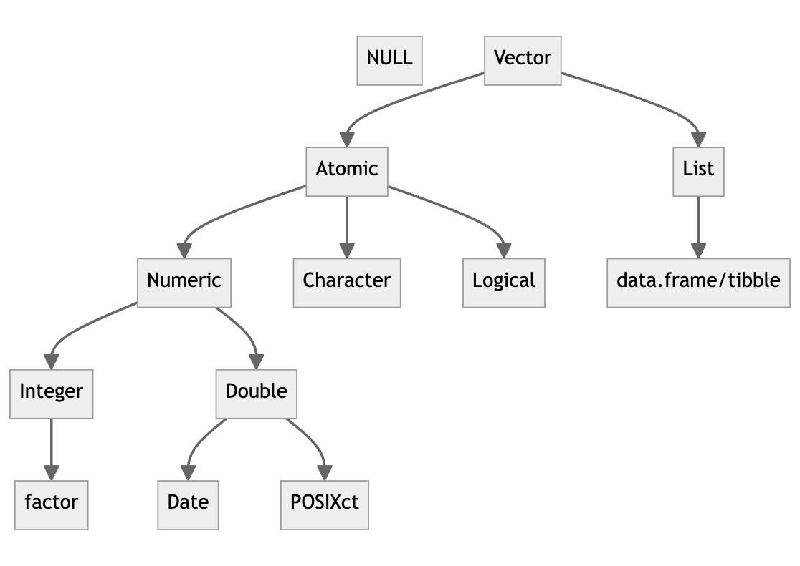
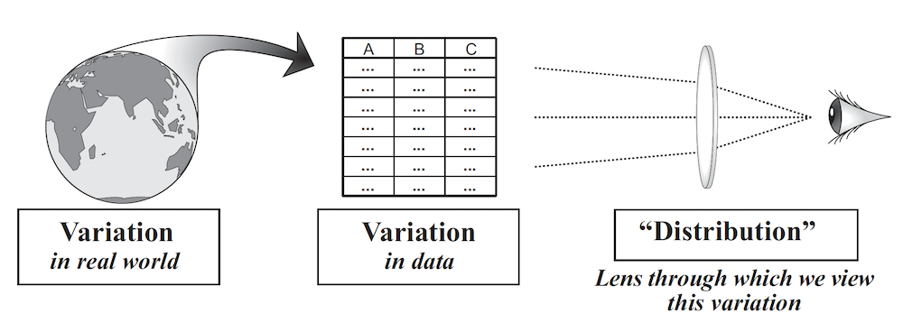
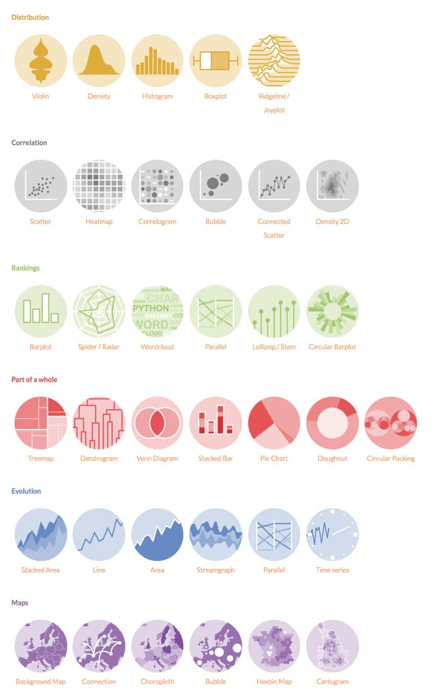

R programming fundamentals
2025-01-21
The three golden rules of statistics
- Know thy problem
- Know thy data
- Know thy tools
Source:
Know thy tools
Know thy tools
What is R?
R is a programming language, i.e., a language used to communicate instructions to a computer
Like all languages, it comprises syntax (structure) and semantics (meaning)
Syntax: The set of rules that govern how symbols can be combined to form valid statements (e.g., function calls, assignments)
Semantics: The meaning associated with syntactically valid statements (e.g., what operations a function performs, what value it returns)
R: Books
R: Cheatsheets
Tidyverse

CourseKata
R syntax comparison
R: Objects and function calls
In R, everything that exists is an object and everything that happens is a function call
Some objects (e.g., vectors, lists and data frames) store data (a.k.a. values)
Numeric (Integer and Double):
5(5.0),5L(5),17.2, and6.38E-4Character:
"Hello world!"or'Hello world!'Logical:
TRUEorFALSE(can be abbreviated asTorF, respectively)NULL(the null value)NA(not available, missing/unknown value)Inf,-Inf, andNaN
Other objects (functions) store code (a.k.a. instructions)
An object is saved in the computer’s memory (environment) only if given a name
- An object can be retrieved from the environment using its name
R: Names
A valid name consists of letters, numbers, and
.or_charactersNames are case-sensitive
A valid name must start with a letter or
.If a name is enclosed in back-ticks, there are essentially no restrictions on the characters that can be used, including spaces and special characters
Valid name with spaces and special character$ : chr "Hello world!"
valid_name : num 5
VALID_NAME : logi TRUE
valid.name : NULLR: Functions and function calls
Calling a function instructs the computer to execute the code stored in the function
A function takes zero, one, or more objects (arguments) as input
A function returns one object as output
To call a function, place its arguments (with or without a name, separated by commas, and wrapped in parentheses) after its name
R: The print function
print(x, ...)
- The
printfunction stores code that, when called, sends its first argument namedxto an output device (screen, printer, file, etc.) and returns it invisibly
- If a function is not specified, the
printfunction is called by default (and thus it can be omitted)
R: Functions and function calls
R: Functions and function calls
dbinom(x, size, prob, log = FALSE)
It’s useful to distinguish between formal arguments (used when defining a function), and supplied arguments (used when calling a function)
When calling a function, supplied arguments are matched with formal arguments first by exact name (perfect matching), then by partial name (prefix matching), and finally by position (if unnamed or name does not match)
When calling a function, I’d recommend that you:
Use positional matching only for the first one or two commonly used arguments (if it enhances readibility)
Avoid using prefix matching
Supply named arguments after unnamed arguments
If a function includes the special “match all the unmatched arguments”
...argument, any formal argument that follow...can only be supplied using its exact nameArguments can have default values, allowing them to be omitted in function calls
R throws an error if any argument without a default value remains unmatched
R: Functions and function calls
dbinom(x, size, prob, log = FALSE)
R: Function composition
The output of a function can be used as the input of another function; this is called function composition
Imagine you want to compute the standard deviation, which is the square root of the mean squared deviation
sqrtandmeanare built-in functions,squaredanddeviationcan be defined as:
- You can either nest the function calls:
- Or you can store intermediate values as objects to be passed from fn to fn:
R: Function composition
- Or you can use the pipe operator
%>%from themagrittrpackage
d %>% f()is equivalent tof(d)
The pipe allows you to focus on the high-level composition of functions rather than the low-level flow of data
The focus is on what’s being done (the verbs), rather than on what’s being modified (the nouns)
Since version 4.1.0, R has a native pipe operator
|>whose behaviour is by and large the same as that of%>%, but with a few subtle but crucial differences!
R: Function composition
[1] 0.1172- You can use
.(or_if using the native pipe) as a placeholder for the object being piped
R: Operators
Arithmetic operators:
+(addition)-(subtraction)*(multiplication)/(division)^(exponent)%%(modulus)%/%(integer division)
Assignment operators:
<-(assignment)=(assignment)
Comparison operators:
==(equal)!=(not equal)<(less than)<=(less than or equal to)>(greater than)>=(greater than or equal to)
Logical operators:
&or&&(logical AND, element-wise or not)|or||(logical OR, element-wise or not)!(logical NOT)
Miscellaneous operators:
%in%(match)%>%or|>(pipe):(range) or::(package)?(help) or??(search)
R: Operators
R: Flow control
The two main ways to control the flow of execution in a program: choices and loops
Choices (e.g., the
ifstatement and theifelseandswitchfunctions) allow you to run different code depending on the inputLoops (e.g., the
forandwhilestatements) allow you to repeatedly run code
R: Choices
- The basic form of an
ifstatement is as follows:
- Typically the actions are contained within
{}
R: Choices
ifreturns a value that you can assign
- The
ifelse(orif_elsefrom thedplyrpackage) function is closely related to theifstatement
- The
switchfunction is closely related to theifstatement and theifelse(orif_else) function
R: Loops
- The basic form of a
forstatement is as follows:
- Typically the actions are contained within
{}
- Another example:
R: Loops
- The basic form of a
whilestatement is as follows:
- Typically the actions are contained within
{}
R: Environments
An environment is a collection of objects (data and functions) stored in the computer’s memory, each with a unique name within the environment
A session refers to the period during which R is running, starting when you launch R and ending when you close it
Each R session has a global environment where user-defined objects reside, and additional environments are created dynamically (e.g., when loading packages)
Objects that you name in your code are stored in the global environment
x : num 666
y : num 111
z : logi TRUER: Environments
- Use the
lsfunction to list the names of all objects in an environment
- Use the
ls.strfunction to list all objects in an environment
- Use the
rmfunction to remove one or more objects from an environment
- Use the
rmandlsfunctions together to remove all objects from an environment
R: Packages
A package is a collection of objects (functions and data) and their documentation stored in the computer’s disk
Packages extend the functionality of R (so you don’t have to reinvent the wheel!)
Use the built-in
install.packagesfunction to download and install one or more packages from the CRAN online repository or from local files
- Use the
installfunction from theBiocManagerpackage to install one or more packages from CRAN, Bioconductor, and other online repositories (e.g., GitHub)
Use the
installed.packagesfunction to list all installed packagesUse the
remove.packagesfunction to remove one or more packagesUse the
update.packagesorBiocManager::installfunction to update all installed packages
R: Packages and environments
- Use the
libraryfunction to load a package from the computer’s disk into memory as an environment, which is then attached to the so called search list
- Use the
searchfunction to list all available environments
R: Packages and environments
base-
Core R functions and utilities
stats-
Functions for statistical modeling and analysis
utils-
Utility functions for data manipulation and information retrieval
graphics-
Basic functions for creating visualizations and plots
grDevices-
Functions for handling graphical devices and output
methods-
Support for object-oriented programming and method dispatch
datasets-
Example datasets that can be used for testing and learning
R: Packages and environments
- Use the
suppressPackageStartupMessagesfunction to suppress messages that are generated when loading a package
[1] ".GlobalEnv" "package:supernova"
[3] "package:mosaic" "package:lsr"
[5] "package:Metrics" "package:fivethirtyeight"
[7] "package:fivethirtyeightdata" "package:Lock5withR"
[9] "package:dslabs" "package:coursekata"
[11] "package:mosaicData" "package:ggformula"
[13] "package:dplyr" "package:Matrix"
[15] "package:ggplot2" "package:lattice"
[17] "package:limma" "package:stats"
[19] "package:graphics" "package:grDevices"
[21] "package:utils" "package:datasets"
[23] "package:methods" "Autoloads"
[25] "package:base" R: Packages and environments
- Once loaded, the objects (functions and data) contained in the package are accessible within the homonymous environment in the current session
R searches for objects by name across all available environments in the order they appear in the search list
The global environment (
.GlobalEnv) is always searched first, followed by package environments in the order they were loaded, with thebasepackage environment always appearing last
[1] ".GlobalEnv" "package:supernova"
[3] "package:mosaic" "package:lsr"
[5] "package:Metrics" "package:fivethirtyeight"
[7] "package:fivethirtyeightdata" "package:Lock5withR"
[9] "package:dslabs" "package:coursekata"
[11] "package:mosaicData" "package:ggformula"
[13] "package:dplyr" "package:Matrix"
[15] "package:ggplot2" "package:lattice"
[17] "package:limma" "package:stats"
[19] "package:graphics" "package:grDevices"
[21] "package:utils" "package:datasets"
[23] "package:methods" "Autoloads"
[25] "package:base" R: Packages and environments
- Use the
conflictsfunction to check for conflicts between loaded packages
[1] "makeFun" "count" "do" "tally" "mean"
[6] "as_label" "enexpr" "enexprs" "enquo" "enquos"
[11] "ensym" "ensyms" "expr" "quo" "quo_name"
[16] "quos" "stat" "sym" "syms" "vars"
[21] "show" "zscore" "binom.test" "cor" "cor.test"
[26] "cov" "cov2cor" "filter" "fivenum" "IQR"
[31] "lag" "median" "prop.test" "quantile" "sd"
[36] "t.test" "toeplitz" "update" "var" "image"
[41] "stars" "head" "tail" "Arith" "cbind2"
[46] "coerce" "Compare" "kronecker" "Logic" "Math"
[51] "Math2" "Ops" "rbind2" "show" "Summary"
[56] "all.equal" "as.array" "as.matrix" "body<-" "chol"
[61] "chol2inv" "colMeans" "colSums" "crossprod" "det"
[66] "determinant" "diag" "diag<-" "diff" "drop"
[71] "format" "intersect" "isSymmetric" "kronecker" "max"
[76] "mean" "min" "norm" "plot" "Position"
[81] "print" "prod" "qr" "qr.coef" "qr.fitted"
[86] "qr.Q" "qr.qty" "qr.qy" "qr.R" "qr.resid"
[91] "qr.X" "range" "rcond" "rowMeans" "rowSums"
[96] "sample" "setdiff" "setequal" "solve" "sum"
[101] "summary" "t" "tcrossprod" "union" "unname"
[106] "which" "zapsmall" R: Packages and environments
- You can explicitly specify the environment using the :: operator to access an object from a particular package, avoiding ambiguity
R: Help
- Use the
?operator or thehelpfunction to get the documentation of an object
# help for the `mean` function
?mean
# same as
help(mean)
# same as
help("mean")
# help for the `mean` function in the `mosaic` package
help("mean", package = "mosaic")
# help for all objects (data and functions) in the `mosaic` package
help(package = "mosaic")
# all vignettes in the `mosaic` package
browseVignettes(package = "mosaic") For help on how to get help go to https://www.r-project.org/help.html
R: Vectors
So far we have been working with objects containing a single value, but R can also work with collections of values
In fact, R is designed to make it easy to work with collections of values
Vectors are the most basic data objects in R; they store (ordered) collections of values
Vectors come in two flavors: atomic vectors and lists
Atomic vectors (often simply referred to as “vectors”) are homogeneous vectors, i.e., all the values they contain (elements) must be of the same type
Lists are heterogeneous vectors, i.e., the elements they contain can be of different types

R: Vectors
- Use the
cfunction (short for “combine”) to create a longer vector from shorter ones (order matters)
R: Vectors
R: Vectors
R: Vectorized operations
- If you ask R to perform an operation on an atomic vector, it will perform it element-wise and return an atomic vector of the same length (but not necessarily the same type) with the output of that operation for each element, in the original order
The
purrrpackage enhances R by providing a complete and consistent set of tools for applying functions to vectorsTo learn more go to https://purrr.tidyverse.org/
R: Subset and pull operators
- The subset operator
[]select any number of elements from an input vector and return an output vector of the same type containing those elements - The pull operators
[[]]and$select a single element from an input vector and return that element, possibly of a different type than the input vector - Subsetting and pull operators can be combined with assignment to modify selected elements of an input vector
R: Subset and pull operators
[1] 2.1 4.2 3.3 5.4R: Lists
- Lists can contain values of different types, including atomic vectors and lists
- Use the
listfunction to create a list
- Use the
strfunction (short for “structure”) to look at the structure of any object, including lists
List of 4
$ A: chr "Hello world!"
$ B: int 5
$ C: logi [1:3] TRUE FALSE TRUE
$ D: num [1:2] 2.3 5.9R: Lists
- Subset and pull operators work with lists the same way they work with atomic vectors
[subset and return a list;[[and$pull and return an element from a list
R: Data frames
- Data frames are the most common way tabular data (row x column, like an Excel spreadsheet) are stored in R
- Data frames are lists of atomic vectors of equal length
- Each element of a data frame (an atomic vector) represents a variable (column)
- Use the
data.frameortibblefunction (preferred in thetidyverse) to create a data frame or tibble, respectively
R: Data frames
This data frame is organized in a “tidy” format:
- Each row represents a observation (person) [use one dataframe for each type/class of observation unit]
- Each column represents a variable (name, height, weight, sex)
- Each value represents a measurement (Mary, 165, 60)
It’s generally good practice to format data frames this way (“to keep things tidy”)
R: Data frames
R: Data frames
- Use the
strorglimpsefunction to look at the structure of a data frame
tibble [3 × 4] (S3: tbl_df/tbl/data.frame)
$ name : chr [1:3] "Mary" "John" "Robert"
$ height: num [1:3] 165 180 195
$ weight: num [1:3] 60 90 70
$ sex : chr [1:3] "F" "M" "M"R: Data frames
R: Data frames
R: Data frames
R: Data frames
R: Data frames
R: Data frames (the dplyr way)
dplyris a package that provides a set of functions for data manipulationdplyris a grammar of data manipulation, providing a consistent set of verbs that help you solve the most common data manipulation challenges:select()select variables/columns based on their namespull()pull a variable/column based on its namefilter()select observations/rows based on their valuesmutate()adds new variables/columns that are functions of existing variables/columnsarrange()changes the ordering of the observations/rowssummarise()(orsummarize()) reduces multiple values down to a single value
These verbs combine naturally with
group_by()which allows you to perform any operation “by group”To learn more go to https://dplyr.tidyverse.org/
R: Data frames (the dplyr way)
R: Data frames (the dplyr way)
R: Data frames (the dplyr way)
dplyrverbs can be combined using the pipe operator to perform to perform complex data manipulations
Data types/measurement levels
- Qualitative vs quantitative (discrete and continuous)
- Categorical (nominal and ordinal) vs numeric (interval and ratio)
- Nominal: the data can only be categorized
- Ordinal: the data can be categorized and ranked
- Interval: the data can be categorized and ranked, equal spacing
- Ratio: the data can be categorized and ranked, equal spacing, true zero
- The CK book uses the terms categorical and quantitative variables
- Values assigned to categorical variables represent categories
- Values assigned to quantitative variables represent quantities
Data types/measurement levels
| Nominal | Ordinal | Interval | Ratio | |
|---|---|---|---|---|
| Equality | X | X | X | X |
| Order | X | X | X | |
| Add/subtract | X | X | ||
| Multiply/divide | X | |||
| Mode | X | X | X | X |
| Median | X | X | X | |
| Mean | X | X | ||
| IQR | X | X | X | |
| Variance/SD | X | X |
Data types/measurement levels
- Most quantitative variables in R contains
Numeric(IntegerorDouble) values - Most categorical variables in R contains
Characterorfactorvalues
R: Factors and levels
factoris a special data type for categorical variables- A
factorvariable is stored as a vector ofIntegervalues - Each
Integervalue corresponds to a level, aCharactervalue that represents a category and it is used when displaying a categorical variable - The levels are ordered alphabetically by default, but they can be ordered in any way
Factor w/ 3 levels "drug1","drug2",..: 3 3 1 3 1 2R: Data structures

R: Missing values
- Sometimes (in fact, usually) there are missing values in a dataset
- R represents missing data with the value
NA(not available or unknown) - If a dataset code missing values in some other way (e.g., -999), recode them as
NA
# read dataset from a file
df <- read_csv("penguins.csv")
# and recode missing values, for example:
# replace -999 with `NA` in the `body_mass_kg` variable/column
df$body_mass_kg[df$body_mass_kg == -999] <- NA # old school
# or
df <- df %>% mutate(body_mass_kg = na_if(body_mass_kg, -999)) # tidyverse
- To learn more go to https://readr.tidyverse.org/
R: Missing values
- You must be careful when removing observations with missing values
- Sometimes removing observations with missing values introduces bias
- In that case, you should use imputation methods to replace missing values with plausible values
Data distributions
One of the most important concepts in statistics is the concept of distribution
A distribution is the pattern of variation in a variable (the “shape” of a variable)

- The pattern of variation in a variable made of many data points is often not obvious until you visualize or summarize all the data points together as a whole
Data distributions
Several tools can be used for exploring data distributions; many of these tools are visual, e.g., histograms, boxplots, scatterplots, bar graphs, etc.
Being skilled at using these tools to look at distributions is an important part of the statistician’s toolbox—and R can help you do it!

R: Visualizing and summarizing quantitative variables
- The most common way to visualize a quantitative variable is with a histogram
R: Visualizing and summarizing quantitative variables
- In a histogram, the columns or bars represent the number of data values that fall within specified intervals of the variable of interest
- These intervals are called
bins, and the width of the intervals is called thebinwidth
R: Visualizing and summarizing quantitative variables
- Use the
favstatsfunction to calculate the “five-number summary” of a quantitative variable
R: Visualizing and summarizing quantitative variables
R: Visualizing and summarizing categorical variables
- The most common way to visualize the distribution of categorical variable is with a bar graph (or bar plot/chart)
- A bar graph looks like a histogram, but it’s not; there is no such thing as bins in a bar graph
- The number of bars in a bar graph is always equal the number of categories/levels in the categorical variable/factor